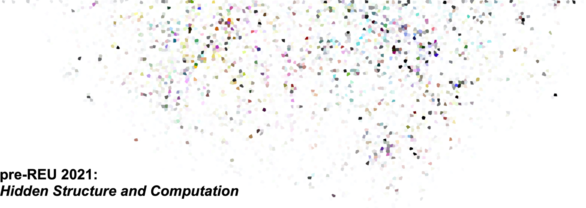

when:
- June 1 (Tuesday) - June 25 (Friday), 2021
- 10:00am - 5:00pm Mountain Time on weekdays.
where:
- Online.
- We will work with participants on an individual basis to ensure there are no technological obstacles to participation.
who:
- The program will accept ten University of Utah students who are enrolled in or considering a math major. Students in underrepresented groups are particularly encouraged to apply!
- New this year: As part of a pilot virtual pre-REU program, we are collaborating with PUMP to recruit five students from the California State University system to join the program. CSU students will be selected through a nomination process and should not fill out the application form above.
- The program contents is targeted at students finishing their first or second year at the U who have completed at least Calculus II (or equivalent) and have not yet completed the foundations of analysis sequence.
- The mathematics in the program is most closely related to the contents of the discrete math and linear algebra courses; participants who have taken these courses will discover a new and deeper perspective, and participants who have not taken these courses will find themselves well-prepared when they do.
- No programming experience is required.
what:
- You will explore concrete applications of linear algebra including random processes and error correcting codes.
- You will work closely with other students and program staff while solving interesting problems.
- You will learn the basics of Python and mathematical computing, then undertake longer exploratory projects.
- You will develop skills, knowledge, and confidence for future success in mathematics in an inclusive, supportive, and enthusiastic environment.
stipend:
- Participants will be PAID a $2,000 stipend for their participation.
- 2020 was the first year that the program was run online, and 10/10 participants said they would recommend the online pre-REU program to future students. They also provided detailed feedback about the program that we are using to make this year's program better than ever!
- Here's what the 2020 participants had to say:
- One thing I learned about myself and grew from a little bit is that in the past I usually liked to see examples of problems before I tried to attempt problems, but now I feel like I've gained tools for attempting problems even when I've never seen anything like it before
- I learned a lot more about fractals and more about linear algebra. I feel that this program taught me about ideas that were more in depth than what I had learned in my linear algebra class.
- I learned that I really enjoy math and like the idea of majoring it and pursuing a career that requires it.
- The instructor was so nice and receptive throughout the whole program and it was really great because I felt comfortable asking questions and discussing math with them. They were very encouraging and boosted my confidence that I am smart enough to do this.
- The TA did an amazing job! They were always so willing to help me and were very approachable. They would explain things to me in a way that made sense.
- I liked applying coding to math problems. It was fun for me to write out my program on paper and think it out there before actually coding.
- I can understand linear algebra. I've tried to get into it earlier but have never got past basic vector stuff. This program really helped me get a better grasp on a field of math I thought I would just try to avoid for the rest of my life.
- Programming the Gram-Schmidt and the random walk really helped me learn to make my programs more adaptable and made me feel more confident in my skill.
- I appreciated the morning lecture/problem sessions because they kept me engaged, I was able to work with other students, and the instructor helped when he popped in to our breakout rooms.
- The digital white boards worked very well. I also thought that Zoom worked well.
- I really liked the colloquium talks because it was a break from the regular material, but still related to math and very interesting! The skills workshops were also very helpful in giving me tools that I can use going forward.
questions/contact:
- Please write to Sean Howe at sean DOT howe AT utah DOT edu
Funded by the National Science Foundation, award no. 1840190